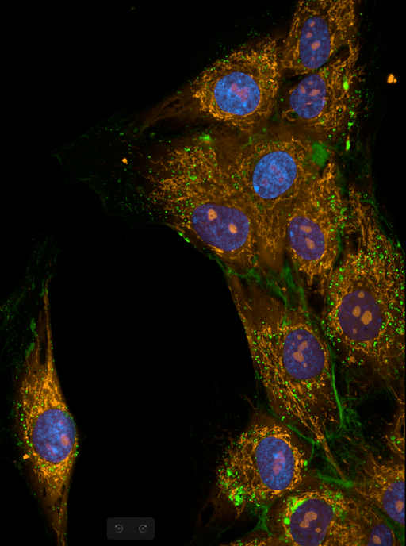
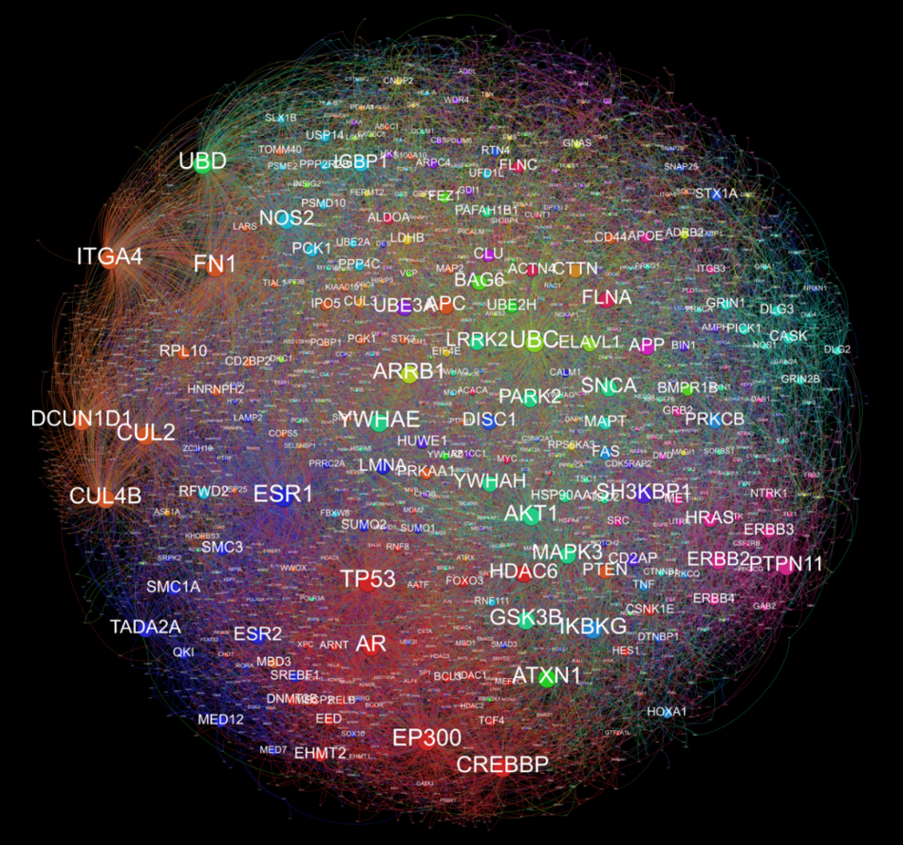
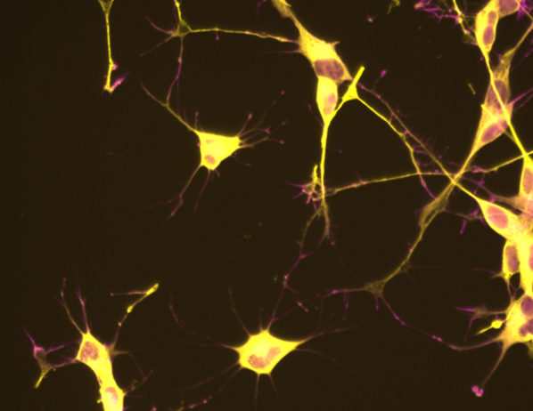

The Cristino Lab integrates neurogenomics, regulatory biology, and systems-level modelling to uncover the molecular mechanisms underlying complex neuropsychiatric and medical conditions.

Image: Dr Jamila Iqbal
Image: Dr Alex Cristino
Image: Dr Alex SykesThe Neurogenomics and Systems Biology Laboratory is focused on understanding how genetic variation and regulatory non-coding elements contribute to complex neuropsychiatric and medical conditions. Our research spans schizophrenia, Alzheimer's disease, rare genetic disorders, and cancer immunotherapy.
We develop computational pipelines to interrogate large-scale genomic and transcriptomic datasets — integrating multi-omics, regulatory element annotation, and small RNA biology to build mechanistic models of gene dysregulation in disease.
Learn more about the labWe are part of the Institute for Biomedicine and Glycomics (IBG) at Griffith University, Brisbane, Australia — an internationally recognised research centre advancing biomedical science and translational medicine.
Interested in joining the lab, collaborating, or learning more? Get in touch →